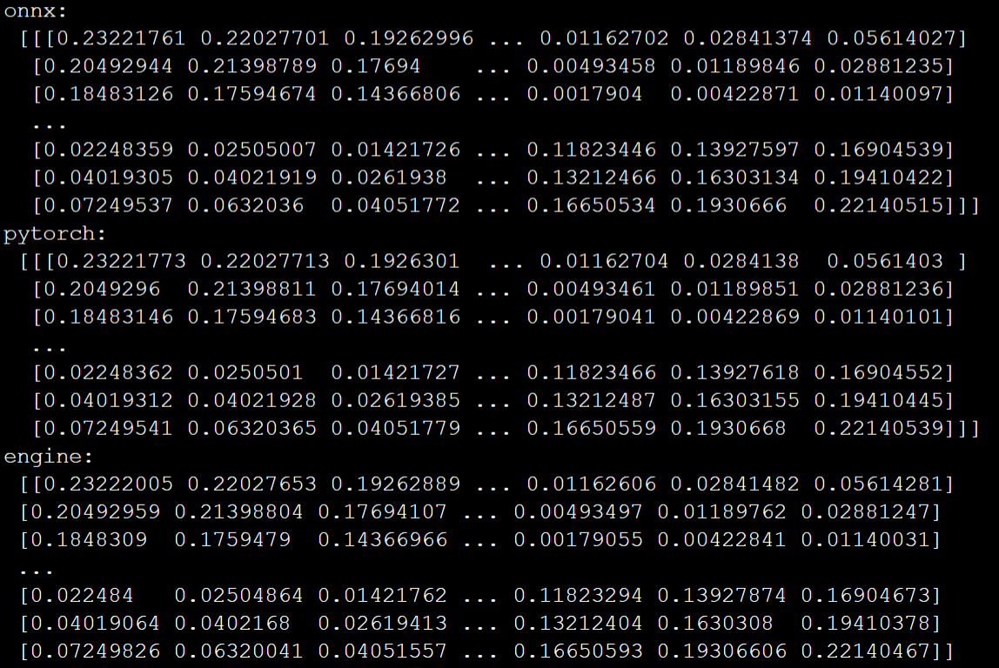

假设你已经训练好了一个基于PyTorch的神经网络模型MyModel，本文将一步一步演示如何将其转换到TensorRT的engine格式，实现高性能模型推理。
代码复制可用，建议收藏~
1. 加载模型权重 直接加载训练好的PyTorch权重即可：
1 2 model=MyModel(in_channel=3 ,out_channel=1 ) model.load_state_dict(torch.load('my_model.pth' ))
2. PyTorch权重转换到ONNX PyTorch本身已经提供了转换接口torch.onnx.export，所以转换起来也很容易：
1 2 3 4 5 model.cuda() model.eval () dummy_input = torch.randn(1 ,3 , 512 ,512 ).cuda() torch.onnx.export(model, dummy_input, "onnx.onnx" , opset_version=11 ,input_names = ['input' ],output_names = ['output' ], dynamic_axes={'input' :{0 : 'batch_size' },'output' :{0 : 'batch_size' }},verbose=True )
在dynamic_axes中指定了batch-size维度是动态的，这意味着，在使用转换后的.onnx格式文件进行推理时，可以设定不同大小的batch-size。
3. ONNX转换到TensorRT的engine 首先导入必须要的包，如果没有安装这些包，需要提前根据官方的readme文件进行安装：
1 2 3 4 5 6 7 8 9 10 11 12 13 import onnxruntimeimport numpy as npfrom polygraphy.backend.trt import ( CreateConfig, Profile, TrtRunner, engine_from_network, network_from_onnx_path, save_engine, engine_from_bytes ) from polygraphy.backend.common import bytes_from_pathimport onnx
现在开始执行转换：
1 2 3 4 profiles = [Profile().add("input" , min =(1 , 3 ,512 , 512 ), opt=(2 , 3 ,512 , 512 ), max =(4 , 3 ,512 , 512 ))] engine=engine_from_network(network_from_onnx_path('onnx.onnx' ),config=CreateConfig(profiles=profiles)) engine_path='engine.engine' save_engine(engine, engine_path)
其中，profiles中需要指定名模型推理时的输入图像大小，比如这里是batchsize x 3 x 512 x 512的。
至此，转换工作已完成。接下来，分别从精度和效率两个方面对PyTorch模型，ONNX以及TensorRT的engine进行对比。
4. 精度对比 为了进行对比，首先随机生成输入图片数据：
1 2 3 4 input_data = np.random.randn(1 , 3 , 512 , 512 ).astype(np.float32) input_data = np.ascontiguousarray(input_data) input_data = torch.tensor(input_data).cuda()
PyTorch推理如下:
1 pytorch_output=model(input_data_)
ONNX推理如下:
1 2 3 4 5 6 7 8 9 10 11 12 onnx_path = "onnx.onnx" onnx_model = onnx.load(onnx_path) providers = ['CUDAExecutionProvider' ] ort_session = onnxruntime.InferenceSession(onnx_path, providers=providers) onnx_output = ort_session.run(None , {'input' : input_data})
engine推理如下:
1 2 3 4 5 engine_path='engine.engine' engine = engine_from_bytes(bytes_from_path(engine_path)) dynamic_batching = TrtRunner(engine.create_execution_context()) with dynamic_batching: engine_output = dynamic_batching.infer({"input" : input_data})['output' ]
比较三者推理结果：
1 2 3 print ('onnx:\n' ,onnx_output[0 ][0 ])print ('pytorch:\n' ,pytorch_output[0 ][0 ].detach().cpu().numpy())print ('engine:\n' ,engine_output[0 ][0 ])

可以看到，转换后的onnx和engine和原始的PyTorch模型精度差异非常小，这说明转换结果非常成功。
5. 推理速度对比 1 2 3 4 5 6 7 8 9 10 11 12 13 14 15 16 17 18 19 20 21 22 23 24 25 26 27 28 import timen=1000 s1=time.time() for i in range (n): model(input_data_) e1=time.time() s2=time.time() for i in range (n): ort_session.run(None , {'input' : input_data}) e2=time.time() s3=time.time() with dynamic_batching: for i in range (n): outputs = dynamic_batching.infer({"input" : test_set})['output' ] e3=time.time() print ('pytorch:' ,(e1-s1)/n)print ('onnx:' ,(e2-s2)/n)print ('engine:' ,(e3-s3)/n)
可以看到，转换后的engine在保持推理精度的同时，也在一定程度上提升了推理速度。
以上代码复制可用，建议收藏~